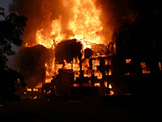

Manna Pro Feed Mill
The Manna Pro feed mill in Circleville, which closed its doors for good on May 8, 2002, was long said by workers to be a very haunted place. One who contacted me talked about doing his rounds late at night and seeing moving shadows everywhere. Equipment turns itself on and off at random. The old "man lift" elevator, which rattles every time someone gets on or off, will rattle for no apparent reason.
There have been at least four deaths at the Manna Pro mill. One was a fireman who was beaten to death by a runaway hose. The other three were heart attacks, which might have something to do with those pumpkin burgers they eat in Circleville. Maybe someone who spent a night inside can let me know if they saw any ghosts.

Unfortunately, all that can be explored of the mill now is a burnt-out plot of land, because the Manna Pro building was destroyed by fire over one weekend in August 2008. On Saturday the 23rd, a small fire was extinguished while workers were demolishing part of the building. Then, around 6AM Sunday morning, the rekindled flames spread into a major conflagration, endangering surrounding buildings and leading to the evacuation of 30 homes. It caused minor damage to a nearby storage barn. The cause of the fire was unknown.
In a slightly strange parallel to the deaths already documented there, a fireman called all the way down from south Columbus suffered injury battling the blaze. The Dispatch for August 25, 2008: "A firefighter from Franklin County's Hamilton Township department was treated for a possible heart attack, authorities said."
It is a shame, but this appears to be all that's left of a haunted building in Circleville. I suppose the fire might be seen as weird, but it was probably something very mundane.
Columbus Dispatch article: "Weekend Fire Destroys Circleville Feed Mill"
Back
forgottenohio@yahoo.com